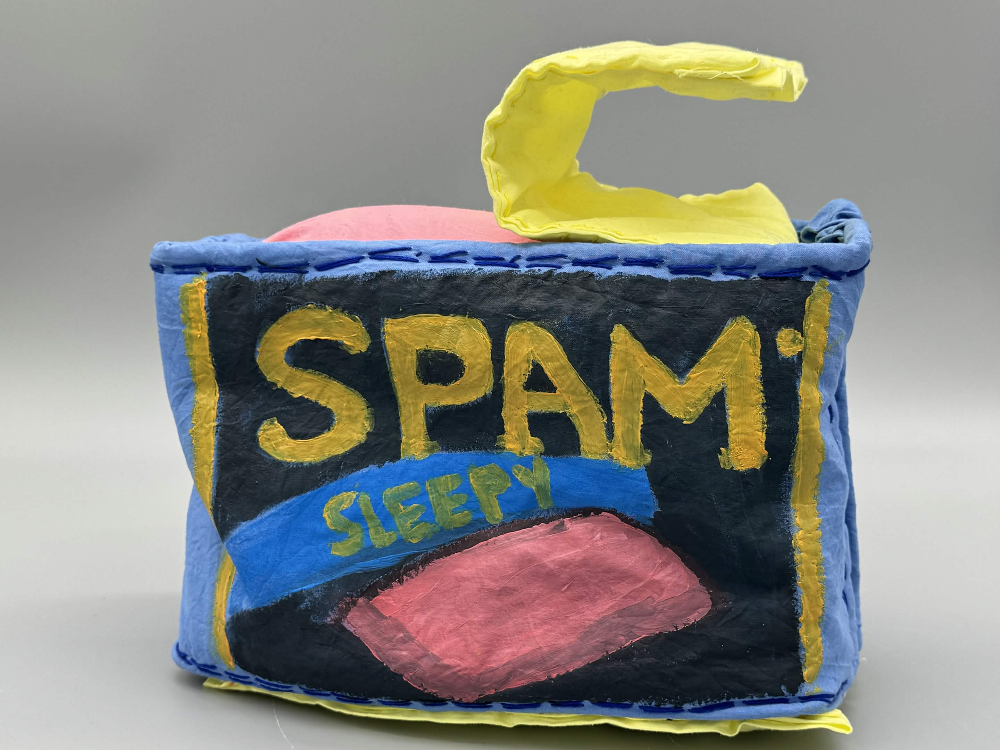
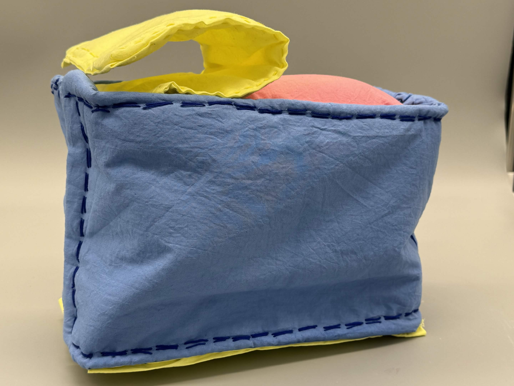
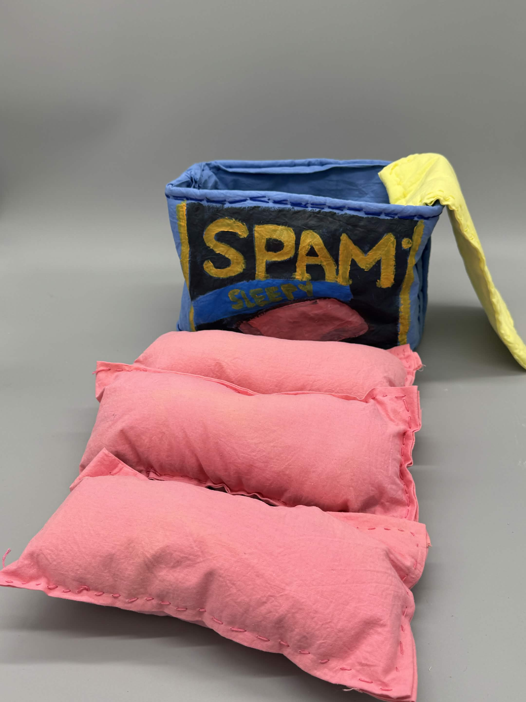

11” x 5 x 7.5”
Fabric, Embroidery Thread, Polyfill, Acrylic Paint, Velcro
This piece is a fabric sculpture of a comfort food that I enjoy a lot. Initially, the piece was meant to be a straight replica
of the can of meat but ended up becoming this more playful themed piece. The pivot to the double entendre of “comfort food” came
from during the fabrication process where the initial attempt at making the slice of meat came out much more pillow-like.
From there, I made a mock flavor label in the stylings of the packaging of other flavors of the food with a subversion
emphasizing the pillowy-ness of the individual slices of meat.